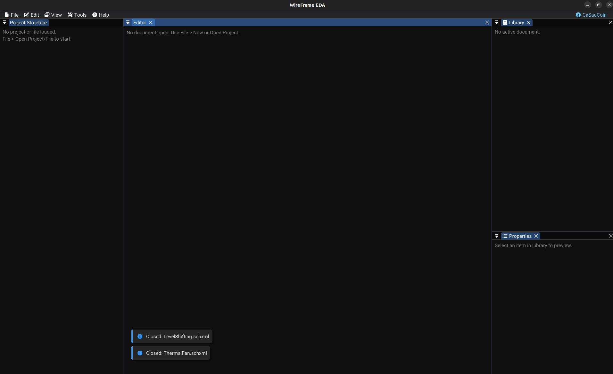

v1.5.47 — Upcoming Release
WireFrame EDA¶
A streamlined environment for schematic capture, SPICE verification, AI-assisted
design, PCB layout, 3D visualization, and manufacturing export.

The WireFrame Workflow¶
- Create Project — Centralize schematics, PCBs, and libraries in a single
.prjxmlfile - Design Schematic — Place components, draw wires, assign net labels, configure properties
- Verify — Run preflight, simulate one circuit block or the complete sheet, and check your acceptance limits
- Convert to PCB — Automatically import netlist and footprints into the PCB editor
- Layout & Route — Place footprints, route traces, fill copper zones, run DFM/DRC
- Release — Generate the Gerber, drill, BOM, netlist, and fabrication manifest
AI-assisted design
AI Copilot can help create and review parts of this workflow. Inspect every proposed change and run the relevant verification before continuing.
Core Capabilities¶
Simulation Workbench¶
Run transient, AC, DC operating-point, and DC sweep analysis without leaving the schematic. Use the included simulator, inspect signals and measurements, and check important outputs against your own pass/fail limits.
AI Copilot¶
Analyze electrical intent, recognize functional blocks, review design findings, and prepare proposed edits before anything changes on the canvas. Copilot can also inspect simulation context and help explain failed testbench criteria.
Schematic Editor¶
Draft robust circuits with an intuitive schematic engine. Place components from KiCad-compatible libraries, route nets with orthogonal wires, assign net labels (SDA, GND, +3V3), and manage a fully automatic netlist.
PCB Layout¶
Translate schematics into physical boards with precision. WireFrame offers 45° routing guidance, multi-layer management, prioritized copper zones, and DFM checks for clearances, board edges, holes, and component placement.
Library Management¶
Load KiCad .kicad_sym and .kicad_mod libraries natively. Create new footprints with the Footprint Wizard. Assign STEP/OBJ 3D models and fine-tune alignment with the 3D Model Alignment dialog.
3D Visualization¶
Validate your design before fabrication with STEP and OBJ models. Inspect components from above and below, including correctly flipped bottom-side footprints.
Keyboard-Driven Workflow¶
W wire · X route · R rotate · F flip · V via · G GND. Every action is one keystroke away. Customize bindings in Preferences → Hotkeys.
Fabrication Export¶
Generate industry-standard Gerber (RS-274X) with WYSIWYG silkscreen accuracy, Excellon drill files, and BOM CSV. Includes a Toner Transfer PDF Exporter — multi-page, 1:1 scale, with automatic mirroring — designed for hobbyist manual PCB fabrication.
Seamless Import¶
Import KiCad 5.x legacy projects (.sch, -cache.lib, .pro) and modern KiCad 6+ formats (.kicad_sch, .kicad_pcb) natively. No manual conversion needed.
SPICE Simulation¶
Validate your design before manufacturing. Run Transient, AC, DC Sweep, and Operating Point analyses powered by NgSpice — then measure results in an interactive waveform viewer with cursors and delta measurements.
AI Copilot¶
Describe a circuit in plain text and let the AI design it. The AI Copilot researches components, generates netlists, runs SPICE verification, and auto-places/routes the PCB — from prompt to Gerber in minutes.
Symbol & Footprint Creator¶
Create custom schematic symbols with the interactive editor or wizard. Generate footprints for any package type with the Footprint Wizard. AI can also generate components automatically from datasheets.
Designed For¶
| Audience | Why WireFrame? |
|---|---|
| Electronics Hobbyists | Clean interface, Toner Transfer PDF for DIY board making, easy KiCad library import |
| Students & Academia | Lightweight installation, SPICE simulation, transparent workflow from schematic to Gerber |
| Professional Engineers | AI-assisted design, keyboard-driven efficiency, full KiCad ecosystem compatibility, robust DFM/DRC engine |
| Open-Source Developers | A responsive EDA workflow with documented project and file formats |
Documentation¶
| Section | Content |
|---|---|
| Getting Started | Launch, main UI, create your first project |
| Tutorials | End-to-end PCB walkthrough and AI-assisted design tutorial |
| Schematic Editor | Place components, draw wires, manage nets, run ERC |
| Simulation | Preflight, analyses, waveforms, block scope, engines, and models |
| AI Copilot | Design assistance, placement, routing, and component generation |
| Copilot Review Guide | Review proposed edits and investigate simulation results safely |
| PCB Editor | Footprints, routing, zones, DFM, and fabrication packages |
| Libraries | Symbols, footprints, Symbol Creator, and Library Converter |
| Advanced Features | Advanced selection, 3D viewer, keymap customization |
| Reference | File formats, configuration, FAQ, changelog |
New to WireFrame?
Start with Getting Started to learn the interface, or jump straight into the Tutorial to experience the full workflow hands-on. Want to see the AI in action? Try the AI-Assisted Design Tutorial.